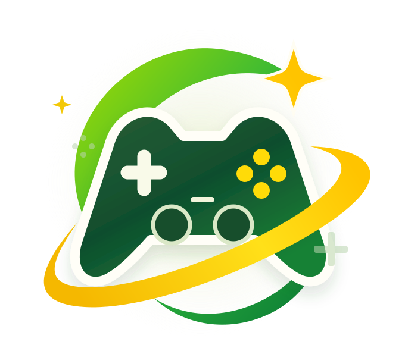

GRANDES HISTÓRIAS. NOVAS DESCOBERTAS.
Seu próximo jogo
começa aqui.
Uma viagem pelos jogos que marcaram cada ano.
Encontre os clássicos. Descubra seu novo favorito.
✦ Seu próximo favorito.

APERTE O PLAY NA SUA PRÓXIMA AVENTURA.
A LINHA DO TEMPO DO SEU PRÓXIMO FAVORITO
Explore por ano.
Grandes lançamentos. Boas histórias. Só falta o play.
Nenhum jogo por aqui.
Tente outro título, ano, gênero ou status para continuar explorando.
SEU GOSTO. SUA PRÓXIMA AVENTURA.
O próximo play
é com você.
Seis escolhas para entender o que faz um jogo ser especial para você. Sem cadastro, sem complicação.
← Voltar ao catálogo